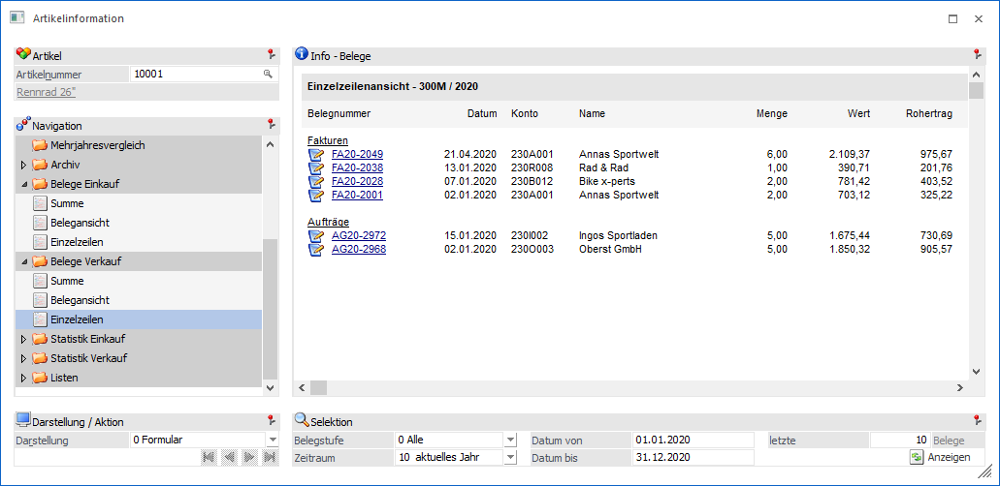
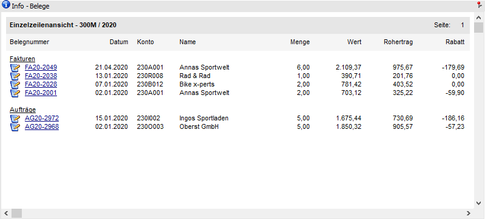
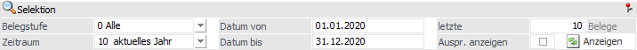
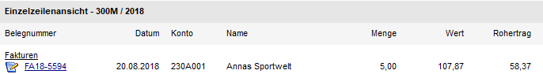
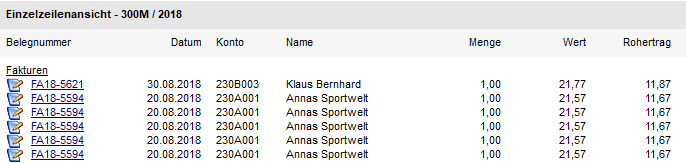

Artikelinformation - Bereich "Belege Einkauf / Belege Verkauf" - Ansicht "Einzelzeilen"
In der Ansicht "Einzelzeilen" werden die Belege mit allen dazugehörigen Einzelzeileninformationen angezeigt. D.h. es wird die Menge ausgewiesen und falls der Artikel mehrfach im Beleg vorkommt, dann werden die Belege mehrfach aufgeführt.

Die Ansicht "Einzelzeilen" besteht aus den folgenden Info-Elementen:
ü Info - Belege
ü Selektion
ü Darstellung / Aktion
Info - Belege

An dieser Stelle werden die Belege, gemäß der nachfolgenden Selektion, dargestellt. Die Art der Anzeige kann mit Hilfe der Option "Darstellung" gewählt werden.
Hinweis
Die Belegnummer ist mit einem Beleg-DrillDown versehen. D.h. über die rechte Maustaste stehen diverse Funktionen, bezogen auf den jeweiligen Beleg, zur Verfügung.
Wird das Editieren-Symbol vor der Belegnummer angewählt, so wird ins Belegmanagement der WinLine FAKT gewechselt und der gewählte Beleg in der Baumstruktur markiert. Dadurch kann sofort eine gewünschte Aktion, wie z.B. Belegdruck, Storno, Belegkopie etc., durchgeführt werden.
Selektion

In diesem Bereich kann definiert werden, welche bzw. wie viele Belege dargestellt werden sollen. Die benutzerspezifische Speicherung der Einstellungen erfolgt für die Bereiche "Belege Einkauf" und "Belege Verkauf" übergreifen.
Ø Belegstufe
An dieser Stelle kann definiert werden, welche Belegstufe ausgewertet werden sollen. Folgende Möglichkeiten stehen zur Verfügung:
ü 0 - Alle
ü 1 - Fakturen
ü 2 - Lieferscheine
ü 3 - Aufträge
ü 4 - Angebot
ü 5 - Nicht gedruckte Belege
ü 6 - Autobelege
Ø Zeitraum
Aus der Auswahlliste kann der Zeitraum ausgewählt werden, der ausgewertet werden soll. Dabei stehen folgende Optionen zur Verfügung:
ü 1 - Heute
ü 2 - aktuelle Woche
ü 3 - letzte 7 Tage
ü 4 - letzte 14 Tage
ü 5 - aktueller Monat
ü 6 - 1.Quartal
ü 7 - 2.Quartal
ü 8 - 3.Quartal
ü 9 - 4.Quartal
ü 10 - aktuelles Jahr
ü 11 - Vorjahr
ü 12 - Alle
Hinweis
Aufgrund des Zeitraums werden die Felder "Datum von" und "Datum bis" gefüllt, welche aber manuell überschrieben werden können.
Ø Datum von / bis
An dieser Stelle kann der Datumsbereich, welcher ausgewertet werden soll, manuell angegeben werden. Die Aktualisierung der Anzeige wird mit Hilfe des Buttons "Anzeigen" gestartet.
Ø letzte x Belege
An dieser Stelle kann definiert werden, wie viele Belege pro Belegstufe maximal angezeigt werden sollen.
Ø Auspr. anzeigen
Die Option "Ausprägungen anzeigen" steht nur bei Hauptartikeln mit Ausprägung zur Verfügung.
ü Option deaktiviert
Es werden
nur die Belege anzeigt, bei denen der Hauptartikel erfasst (ohne Ausprägung)
oder das Ausprägen über das Aufteilungsfenster vorgenommen wurde. Es wird dabei
nur eine Gesamtsumme pro Beleg dargestellt.
ü Option
aktiviert
Es werden die Belege anzeigt, bei denen der Hauptartikel erfasst
(ohne Ausprägung) oder das Ausprägen über das Aufteilungsfenster vorgenommen
wurde. Des Weiteren werden all jene Belege aufgelistet, bei welchen der
Ausprägungsartikel direkt in der Belegmitte eingegeben wurde (ohne
Aufteilungsfenster).
Dabei wird jede erfasste
Ausprägung in eine einzelne Zeile pro Beleg dargestellt.
Beispiel
Bei deaktivierter Option wird nur der Beleg "FA18-5594" angezeigt. In diesem wurde der Haupartikel "10022" erfasst und über das Aufteilungsfenster auf 5 unterschiedliche Ausprägungen (Seriennummern) ausgeprägt.

Bei aktivierter Option werden 5 Zeilen für den Beleg "FA18-5594" gebildet, da in diesem auf 5 unterschiedliche Ausprägungen ausgeprägt wurde.
Zusätzlich erscheint der Beleg "FA18-5621". Dort wurde direkt der Ausprägungsartikel über die Artikelnummerneingabe erfasst.

Ø  Anzeigen
Anzeigen
Durch Anwahl des Buttons "Anzeigen" wird die Belegauswertung aufgrund der getroffenen Einstellungen angezeigt.
Darstellung / Aktion

Ø Darstellung
An dieser Stelle kann mit Hilfe einer Auswahlliste gewählt werden, ob die Darstellung der Belege in Form eines Formulars oder einer Tabelle erfolgen soll.
Ø  VCR-Buttons
VCR-Buttons
Sollte die Anzeige über mehrere Seiten dargestellt werden, dann kann mit Hilfe der VCR-Buttons zwischen den einzelnen Seiten gewechselt werden.